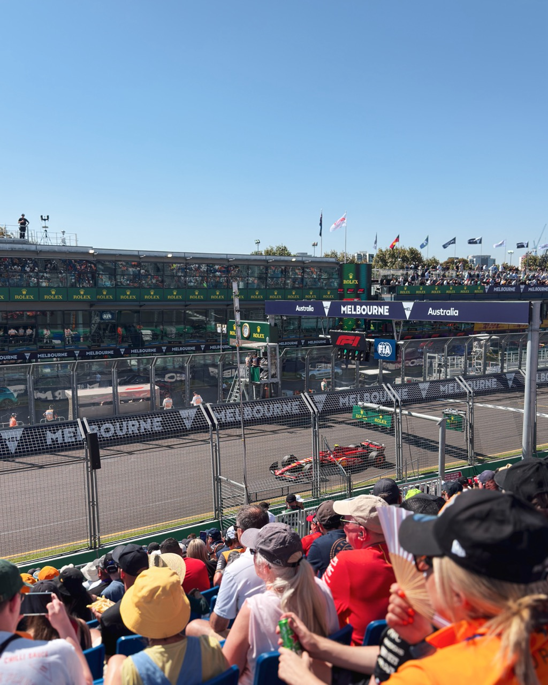
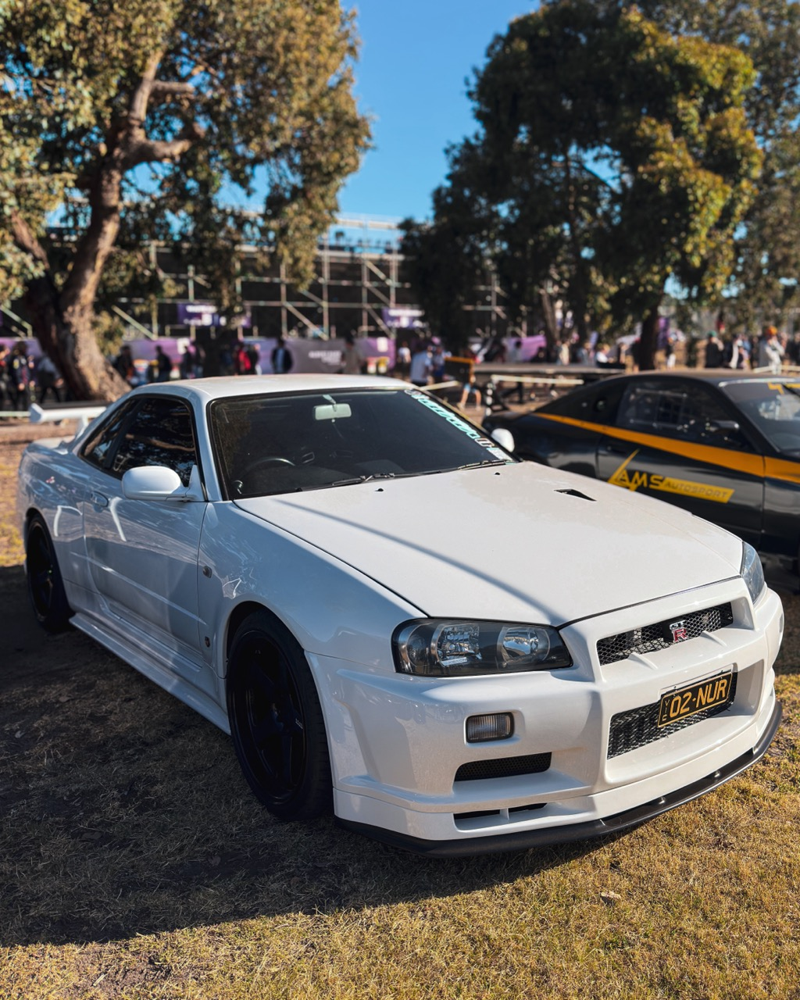
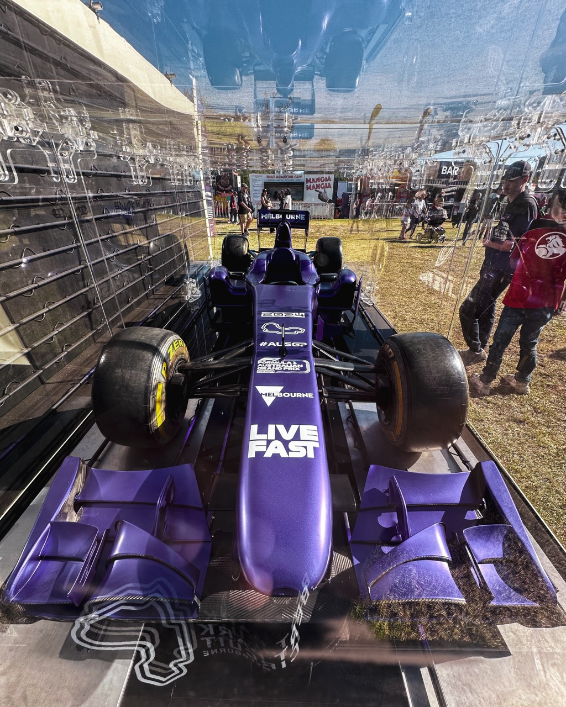
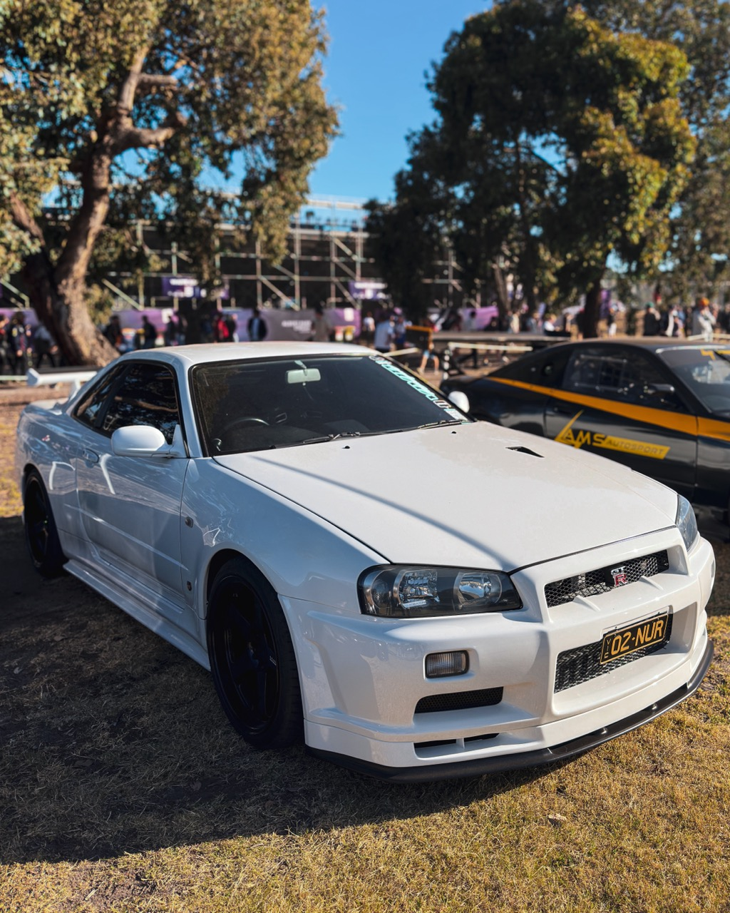
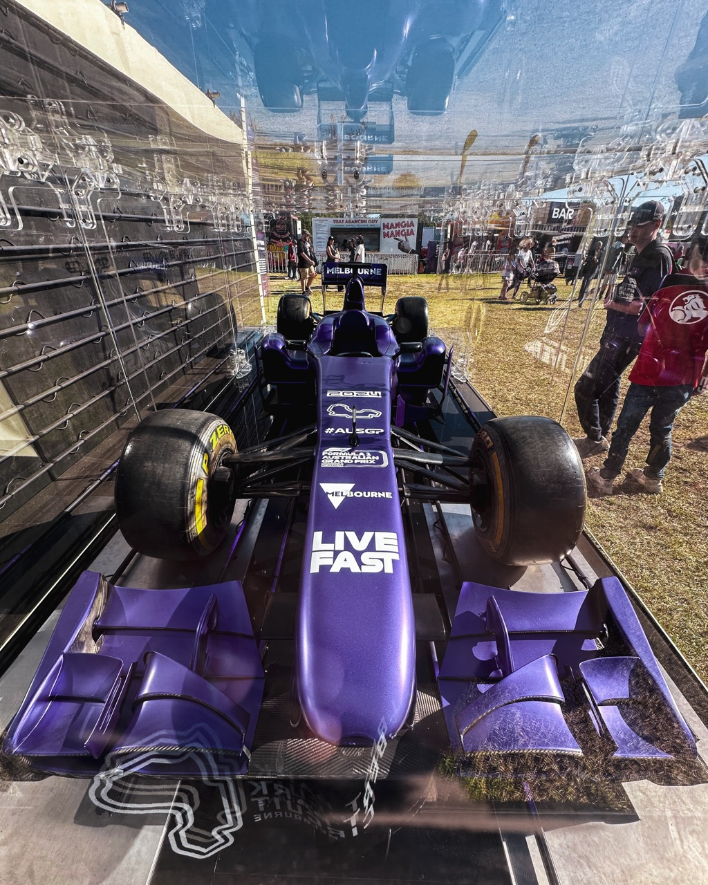

About Me
My name is Kevin Menajang. I am an international student from Indonesia. I am currently doing a Masters of Digital Media at Victoria University Melbourne.
My hobbies are photography, videography, camera drone, cycling, running, football, badminton, tennis, guitar, piano, drum, bass, music, travelling, gaming, movies, concerts and motorsports like the Formula 1 Grand Prix.
On this page, I would like to share my experience during the Australian Formula 1 Grand Prix in Albert Park, Melbourne. The racing event was held 4 days from Thursday 21st of March until Sunday 24th of March. I went there on the first day and the second day of the event. It was such an amazing experience for me because all this time I could only watch the race from the TV or online streaming platforms back in my home country in Indonesia.
Here are some pictures that I took from the event:
 




That is all that I want to show. Thank you for visiting my website, Have a great day!